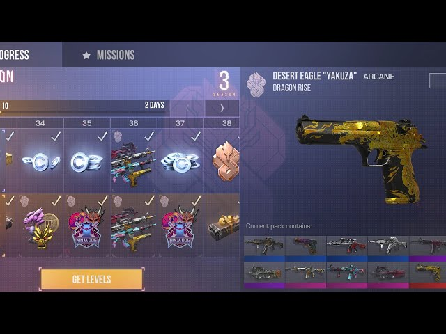

Standoff 2
Standoff 2 - мобільний багатокористувацький шутер розроблений компанією Axlebolt. Головна ціль у цій грі - досягнути великого рівня, та виконувати різноманітні завдання для розблокування скінів на зброю. В цій грі також доступна така функція як донат (це коли ти за гроші купляєш, щось у грі). Ця гра дуже класна з прикольними штуками.
Battle Pass
Battle pass - це низка нагород в Standoff 2. Тобі дають спеціальне завдання, ти його виконуєш і тобі дають певну кількість балів (300, 400, ...). Коли ж ти накопичив певну кількість балів (1000), то ти переходиш на наступний рівень за який тобі дають нагороду. Також є Gold Pass. Раніше його треба було купляти за гроші і тобі давали зразу всі нагороди, а вони краще ніж в Battle Pass. Але тепер його можна купити за голду (валюта в Standoff 2).